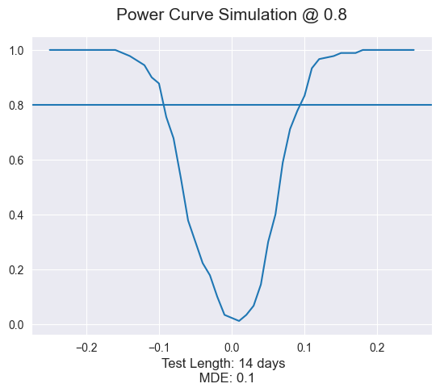

Power Module Usage
In this example, we look at how to use the Power Module for a pre-test analysis. We will use the sales dataset from Meta.
[5]:
import pandas as pd
from panel_exp.design import power
from panel_exp.methods.tbr import TBRRidge
from panel_exp.panel_data import PanelDataset, TimePeriod
#import multiprocessing
# number of processors
# Normally, we would use the following code to get the number of processors and use multiprocessing. But, auto-docuemntation does not support multiprocessing.
# n_proc = multiprocessing.cpu_count()
long_df = pd.read_csv('meta_geo.csv')
# trim data to only include pre-test data
long_df = long_df[long_df.time < 91]
wide_df = pd.pivot_table(long_df, index='location', columns='time', values='Y')
pds = PanelDataset(wide_df )
print(pds)
---------------------------------------------------------------------------
ImportError Traceback (most recent call last)
/Users/christopherb/Documents/p4/p3/panel_exp/docs/source/power_example.ipynb Cell 2 line 3
<a href='vscode-notebook-cell:/Users/christopherb/Documents/p4/p3/panel_exp/docs/source/power_example.ipynb#W1sZmlsZQ%3D%3D?line=0'>1</a> import pandas as pd
----> <a href='vscode-notebook-cell:/Users/christopherb/Documents/p4/p3/panel_exp/docs/source/power_example.ipynb#W1sZmlsZQ%3D%3D?line=2'>3</a> from .panel_exp.design import power
<a href='vscode-notebook-cell:/Users/christopherb/Documents/p4/p3/panel_exp/docs/source/power_example.ipynb#W1sZmlsZQ%3D%3D?line=3'>4</a> from panel_exp.methods.tbr import TBRRidge
<a href='vscode-notebook-cell:/Users/christopherb/Documents/p4/p3/panel_exp/docs/source/power_example.ipynb#W1sZmlsZQ%3D%3D?line=4'>5</a> from panel_exp.panel_data import PanelDataset, TimePeriod
ImportError: attempted relative import with no known parent package
[2]:
# aggregate data for TBR
control_units = pd.DataFrame(wide_df.loc[[unit for unit in pds.units if unit not in ['chicago', 'cincinnati', 'houston', 'portland', 'honolulu']]] ).T
treated_units = pd.DataFrame(wide_df.loc[['chicago', 'cincinnati', 'houston', 'portland']].mean(axis=0), columns=['treated'])
wide_agg = pd.concat([treated_units, control_units], axis=1)
end = wide_df.columns[-1]
L = len(wide_df.columns)
test_length = 14
panel_data = PanelDataset(wide_agg.T, treated_units = ['treated'], treated_periods=[TimePeriod(start=L-test_length)])
pa = power.PowerAnalysis(panel_data
, TBRRidge
, 'Kfold'
, test_length
, mx_effect=.25
, n_jobs=1) # here we would use n_jobs=n_proc
pa.run_analysis()
---------------------------------------------------------------------------
NameError Traceback (most recent call last)
/Users/christopherb/Documents/p4/p3/panel_exp/docs/source/power_example.ipynb Cell 3 line 2
<a href='vscode-notebook-cell:/Users/christopherb/Documents/p4/p3/panel_exp/docs/source/power_example.ipynb#W2sZmlsZQ%3D%3D?line=0'>1</a> # aggregate data for TBR
----> <a href='vscode-notebook-cell:/Users/christopherb/Documents/p4/p3/panel_exp/docs/source/power_example.ipynb#W2sZmlsZQ%3D%3D?line=1'>2</a> control_units = pd.DataFrame(wide_df.loc[[unit for unit in pds.units if unit not in ['chicago', 'cincinnati', 'houston', 'portland', 'honolulu']]] ).T
<a href='vscode-notebook-cell:/Users/christopherb/Documents/p4/p3/panel_exp/docs/source/power_example.ipynb#W2sZmlsZQ%3D%3D?line=2'>3</a> treated_units = pd.DataFrame(wide_df.loc[['chicago', 'cincinnati', 'houston', 'portland']].mean(axis=0), columns=['treated'])
<a href='vscode-notebook-cell:/Users/christopherb/Documents/p4/p3/panel_exp/docs/source/power_example.ipynb#W2sZmlsZQ%3D%3D?line=3'>4</a> wide_agg = pd.concat([treated_units, control_units], axis=1)
NameError: name 'wide_df' is not defined
[3]:
pa.plot_power_curve()

[4]:
pa.summary()
[4]:
| Parameters | |
|---|---|
| Model | TBRRidge |
| Inference | Kfold |
| Test Length | 14 |
| Number of Simulations | 4410 |
| Statistics | |
| MDE Percent | -0.1 |
| MDE KPI | -4873.134259 |
| Power | 0.8 |
| Type 1 Error Rate | 0.044444 |
[ ]: